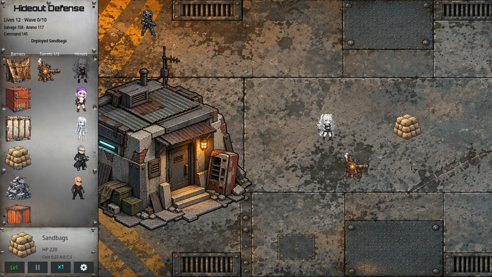
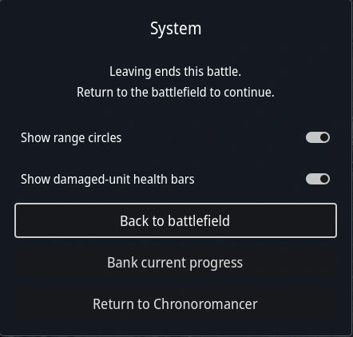
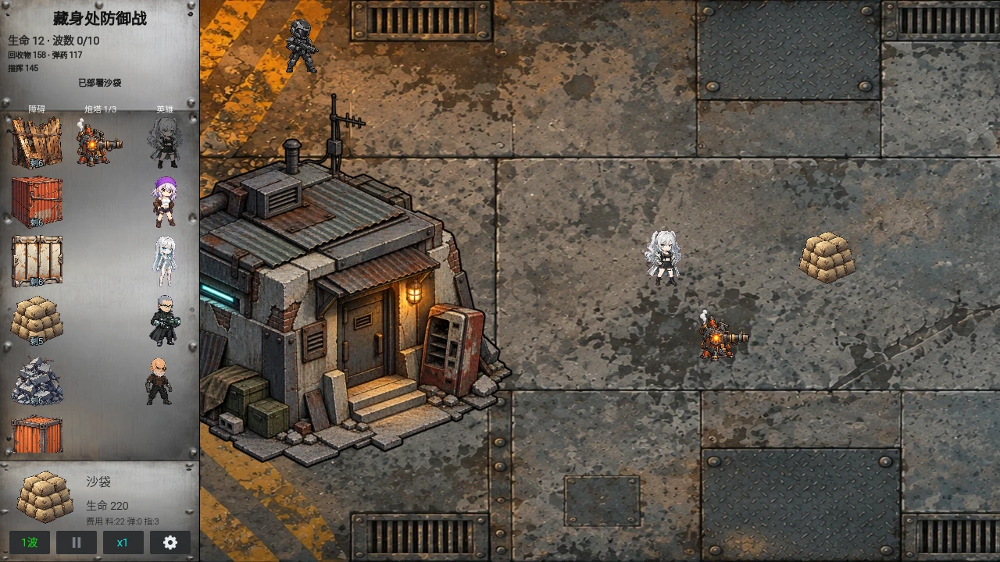
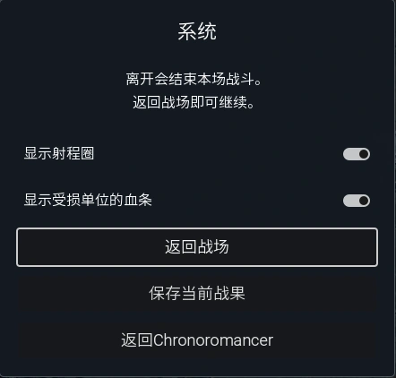

Select a screenshot to enlarge it. Screens show example inventories and progress.
Tower Defense is the separate battlefield reached from the Future resistance routes. Prepare permanent upgrades in the main game, then place heroes, turrets and barriers in the battle view and use your own gun and grenades to protect Lives.
- Check current Objectives; Operations is the earliest permanent launch point.
- Choose training and equipment in Barracks before launching; each battle uses your departure configuration.
- Place defenses while paused, then start the next wave. Use the battle menu when leaving.
Entry and the story setting
After Story Beat 31, the Underground Modification Clinic provides access to Operations and its permanent Fortress Defense launch action. Hideout Defense also becomes available after this beat. Launching a battle costs no in-game time.
Current battle entry supports Windows, Linux, macOS and Android. Story TD starts enabled in new games on all four; a save retains its own choice. Disabling it lets story and character routes bypass TD victory requirements. The switch itself grants no campaign clears, EXP, Clout, Infinite access or recruits.
Your first battle
- Inspect Lives and resources. The unupgraded start is 12 Lives, 220 Salvage, 160 Ammo and 200 plus base Leadership Command; permanent upgrades can change these values.
- Select a hero, turret or barrier on the left, then click open ground. Buildings, spawn areas and overlapping footprints block placement. Heroes provide sustained attacks and specials; barriers buy time.
- Keep resources for replacement turrets and barriers before starting the next wave. Kills replenish battle resources, with additional rewards on selected authored waves. Lost Lives do not refill between waves.
- Equip a ranged weapon before departure to shoot personally. Click the field to fire; right-click throws a grenade. On touch screens, activate the grenade aiming button and tap a target.
- Prioritize escaping flyers, ranged pressure and siege enemies. Observe at low speed before accelerating.

Practical controls
| Control | Use |
|---|---|
| Click / tap | Select and place; shoot at the battlefield when no placement is pending. |
| M | Move a selected deployed object for free, retaining damage, cooldowns and spent uses. |
| Right-click / Escape | Cancel pending placement or movement. During normal combat, right-click throws a grenade. |
| R | Cycle three player firing positions. |
| 1 / 2 / 3 / 4 | Choose ×1 / ×2 / ×3 / ×4 speed, also available on screen. |
| A / D, arrows, drag | Pan horizontally; desktop edge scrolling is also available. |
| S | Preview the selected hero’s special animation; this does not activate a combat ability. |
| Pause / system menu | Freeze combat and plan placements. Banking and return controls are in the system menu. |
What leaves the battlefield
| Resource | Use and persistence |
|---|---|
| Salvage / Ammo / Command | Temporary deployment resources, renewed next battle. They do not convert into Reclamation materials. Personal gunfire and grenades spend none. |
| Hero EXP | Normally earned by a hero’s final blows and spent on that hero’s training. |
| Army EXP | Earned by player, turret and reflected-barrier kills; funds permanent research and selected army upgrades. Salvage Transponder is an exception to the usual split. |
| Resistance Clout | Earned from first campaign clears and Infinite ten-wave milestones; an unlock threshold rather than deployment currency. |
| Leadership | If already learned, increases by one per ten fully cleared waves in an attempt; improves Command on future launches. |
Hero kills usually award personal EXP, while player and turret kills award Army EXP. Salvage Transponder divides its wearer’s kill EXP equally between both pools. Fractional EXP is retained. Battle Salvage and Reclamation materials are separate resources.
Campaigns and Infinite mode
Each map starts with a fixed-length campaign. Actually clearing that map makes later launches from the same entry Infinite. Switching story TD off is not a clear. Each Infinite attempt starts at Wave 1 and has no final wave.
Show six maps and rewards (includes late-game entries)
| Map | Campaign waves | First-clear Clout | Infinite Clout per 10 waves |
|---|---|---|---|
| Hideout Defense | 10 | 5 | 1 |
| Fortress Defense | 20 | 10 | 2 |
| Temple Counterattack | 25 | 15 | 3 |
| Syndicate Gate Defense | 25 | 15 | 3 |
| Fortress Interior Defense | 30 | 20 | 4 |
| VOID Final Assault | 40 | 30 | 5 |
- Hideout and Operations: after Story Beat 31.
- Anomaly Temple: Story Beat 77, The Last Open Door complete, then leave and revisit; use its bridgehead action 18:00–22:00.
- Syndicate: Story Beat 85 plus Our War complete; launch from its base.
- Fortress interior: after Story Beat 96, use the defense action at Cid’s Clinic.
- Late assault: after Story Beat 99, use the assault action at Central Command. Follow current Objectives for the approach.
The six first campaign clears total 95 Clout, once per campaign. Infinite milestones are calculated separately for each attempt.
Infinite increases enemy health, damage and numbers, and raises EXP multipliers. Growth has no fixed late-wave cap; see TD Battle Reference for wave lists and scaling.
Banking, defeat and returning
The system menu can bank current earnings or return normally to the main game. Banking does not create a resumable board: the next launch is a new attempt with fresh units, enemies, Lives and temporary resources. Only fully completed waves count toward milestones.
Normal battle completion, normal return, closing the battle window and Android backgrounding attempt to bank earnings. This is not a save after every wave; a hard interruption can lose unbanked progress. If saving reports failure, retry while the battle remains open. Re-reading the same banked earnings does not award them again.
Hero retreat is not permanent death. Battlefield wounds do not become persistent main-game HP; a fresh battle starts heroes at their current maximum. Each hero normally deploys once per attempt; Emergency Phase Beacon provides a specific exception.
New Game+ behavior
New Game+ retains army training, equipment, research, facilities, materials and earned EXP while story and recruitment routes must be followed again. Return normally from a battle and process or Undo a pending Reclamation batch before starting it. A lifetime clear from an older timeline does not force a fresh timeline’s uncleared campaign into Infinite; its current-timeline clear does.

Common blockers
- No launch action: check Objectives, story progress, location and time. Late entries do not replace Operations’ early entry.
- Cannot redeploy a hero: ordinary retreat spends that attempt’s deployment. New waves do not reset it. A Beacon extraction becomes available next wave and costs deployment resources again.
- Cannot place another barrier: the eight ordinary designs each have a whole-battle supply, not a refill every wave. Turrets also have a shared active cap and individual copy limits.
- Personal shots do no damage: equip a ranged weapon before launching. Ordinary-combat temporary bonuses do not all transfer to TD.
- Manual fire feels slower at high speed: gun and grenade cooldowns use active real seconds. ×4 battle speed does not quadruple these weapons.
- Banked earnings survived but the board restarted: earnings persist; an unfinished board does not.
塔防是从未来反抗军相关路线进入的独立战场。先在主游戏中整理军队与永久升级，再进入战场部署英雄、炮塔和屏障，并用自己的枪与手榴弹守住生命数。
- 先检查当前目标；作战中心是最早的固定入口。
- 在兵营选择培养对象、装备物品；每场战斗都会读取出发时的配置。
- 先暂停部署，再开始下一波；需要离开时使用战场菜单正常返回。
进入战场与剧情设置
完成主线节点 31 后，可在Cid 的地下改造诊所进入作战中心；作战中心的要塞防御战是固定入口。藏身处的防御入口也在该节点后开放。进入战斗本身不消耗游戏时间。
Windows、Linux、macOS 和 Android 均有当前塔防入口。剧情塔防设置在新游戏中默认开启；存档会保留自己的选择。关闭后，剧情与角色路线会跳过塔防胜利门槛，仍可继续故事；关闭设置不会替你完成战役、领取经验或声望，也不会单独解锁无限模式或招募角色。
第一场战斗怎么打
- 进入后先看生命数与资源。基础开局为 12 生命、220 回收物、160 弹药、200＋基础领导力的指挥；相关升级会改变这些数值。
- 在左侧选择英雄、炮塔或屏障，点击空位放置。建筑、出生区、重叠区域不能放置。英雄擅长持续输出与特殊技能；屏障负责争取时间。
- 先留出替换炮塔与补屏障的资源，再开始下一波。击杀会补充战场资源；部分波次另有奖励。生命损失不会在两波之间自动恢复。
- 有远程武器即可亲自射击。点击战场射击；右键投掷手榴弹。触屏使用手榴弹按钮进入瞄准，再点击目标。
- 优先处理漏网的飞行单位、远程火力与攻城单位。先用慢速观察压力来源，再提高速度。

实用操作
| 操作 | 作用 |
|---|---|
| 点击／轻触 | 选择和放置；未进行部署时向战场射击。 |
| M | 移动选中的已部署单位；移动免费，但保留伤害、冷却与已使用次数。 |
| 右键／Escape | 取消正在进行的放置或移动；正常战斗中右键会投手榴弹。 |
| R | 切换三个射击位置。 |
| 1 / 2 / 3 / 4 | 切换 ×1／×2／×3／×4 速度；也可用屏幕按钮。 |
| A / D、方向键、拖动 | 横向查看战场；桌面端也可用边缘滚动。 |
| S | 预览所选英雄的特殊动作，不会手动触发战斗技能。 |
| 暂停／战场菜单 | 冻结战斗并整理阵型。保存收益与返回功能位于战场菜单。 |
哪些资源会带回去
| 资源 | 用途与保留方式 |
|---|---|
| 回收物／弹药／指挥 | 仅供当前战斗部署；下一场重新给付，不会换成再生工坊材料。亲自开枪和投手榴弹不花这些资源。 |
| 英雄经验 | 通常由英雄最后一击获得，供该英雄训练。 |
| 军队经验 | 由玩家、炮塔和反伤屏障的最后一击获得，供永久研发与部分军队升级使用。回收应答器另有分流规则。 |
| 反抗军声望 | 来自首次战役通关与无限模式的十波奖励；用于解锁门槛，不是部署货币。 |
| 领导力 | 已学会领导力时，每场每完整通过 10 波增加 1 点；影响下次出发的指挥资源。 |
英雄通常独占自己的击杀经验，玩家和炮塔则获得军队经验。装备回收应答器会将佩戴者的击杀经验各分一半。经验不足一整点的部分会保留；不要把战场回收物与再生工坊材料混为一谈。
战役与无限模式
每张地图第一次出战为固定波数战役；实际通关该地图后，再次从同一入口进入无限模式。关闭剧情塔防不等于已经通关。无限模式每次从第一波重新开始，没有最终波数。
展开六张地图与奖励（含后期入口）
| 地图 | 战役波数 | 首次通关声望 | 无限模式每 10 波声望 |
|---|---|---|---|
| 藏身处防御战 | 10 | 5 | 1 |
| 要塞防御战 | 20 | 10 | 2 |
| 神殿反击战 | 25 | 15 | 3 |
| 辛迪加大门防御战 | 25 | 15 | 3 |
| 堡垒内部防御 | 30 | 20 | 4 |
| VOID最终突袭 | 40 | 30 | 5 |
- 藏身处与作战中心：主线节点 31 后。
- 异常神殿：主线节点 77、《最后一扇敞开的门》完成后，离开再回访，18:00–22:00 使用当前目标指向的据点防御行动。
- 辛迪加：主线节点 85，并完成《我们的战争》；入口在其基地。
- 要塞内部：主线节点 96 后，到 Cid 的诊所使用防御行动。
- 后期突击：主线节点 99 后，到VOID中央指挥总部使用突击行动；先以当前目标给出的路线为准。
六场首次战役共给 95 点声望；每场只能领取一次。无限模式按本次完整通过的波数另行累计。
无限模式会提高敌人生命、伤害与数量，也会增加经验倍率。没有“到某一波后不再增长”的固定上限；详细波表与增长规则见 TD战斗参考。
保存收益、失败与返回
战场菜单可以立即保存当前收益，也可以正常返回主游戏。保存收益不会建立可继续的棋盘：下次仍是新的一场，单位、敌人、生命数与临时资源不会接着上次的位置继续。只计算已完整通过的波次。
正常结束、正常返回、关闭战斗窗口，以及 Android 切到后台时会尝试保存当前收益。不要把它当作每波自动保存；突然断电或强制终止可能丢失尚未保存的部分。保存失败时按提示重试，战场会保持打开。已保存的同一笔收益不会因重复读取而再次发放。
英雄撤退不会永久死亡，也不会把战场中的剩余生命带回主游戏；下一场以当前配置的最大生命出战。通常一位英雄每场只能部署一次，紧急相位信标是明确例外。
新周目会怎样
新周目保留军队训练、装备、研发、设施、材料与已获得的经验，但要重新走当前周目的故事和招募路线。开始前请先正常返回战场，并处理或撤回再生工坊的待处理队列。旧周目的终身战役记录不会把新周目尚未通关的地图直接变成无限模式；当前周目完成后才切换。

常见卡点
- 找不到入口：先看目标和主线节点，再确认地点与时段。晚期行动不会替代作战中心的早期入口。
- 英雄不能再放：普通撤退耗掉本场部署资格；换波不会重置。信标撤离要等下一波，并重新付费。
- 屏障不能再放：八种常规屏障各有整场次数，破坏和换波都不补满；炮塔还有共享上限与各型号上限。
- 枪没有伤害：出发前装备远程武器。角色普通战斗的临时加成不会全部转进塔防。
- 加速后手动火力跟不上：枪与手榴弹按未暂停的实际秒数冷却；战场 ×4 不会把它们也加速四倍。
- 收益已存但棋盘重开：这是正常规则；保存的是收益，不是未完成战场。
Adapted and updated from the community Chronoromancer Wiki. Community source and history · CC BY-SA 4.0. Game images © Chronoromancer Studio.